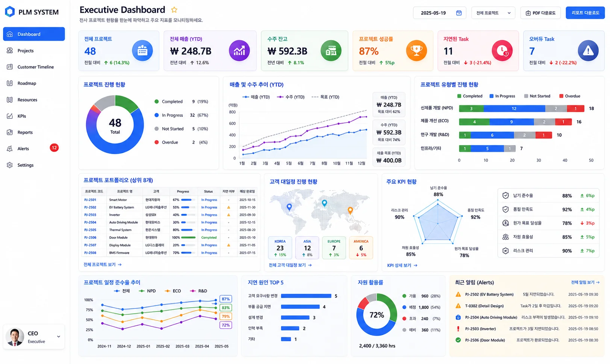
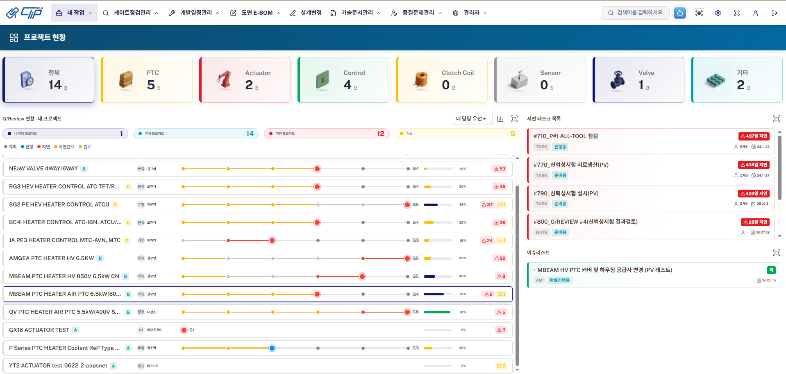
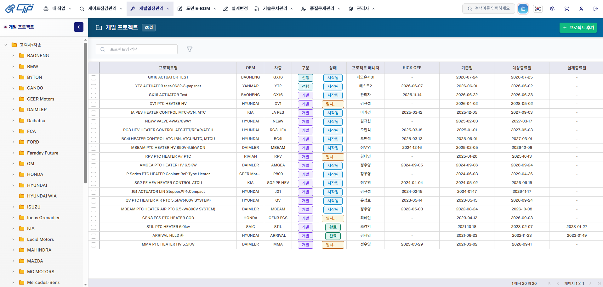
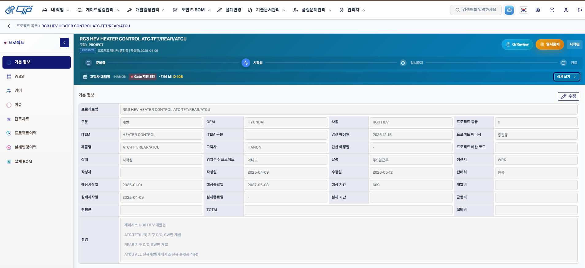

하나의 계정으로 모든 Clip 업무에 접근
조직 역할에 따라 필요한 제품과 데이터 권한을 연결합니다.
도면·리비전·BOM·프로젝트·원가를 연결해 제품개발의 흐름과 회사 성과를 함께 관리합니다.
SSO를 출발점으로 역할별 업무와 Clip 제품군을 연결해 같은 제품 데이터를 기준으로 일합니다.
조직 역할에 따라 필요한 제품과 데이터 권한을 연결합니다.
리비전·BOM·일정·원가를 하나의 제품 데이터 흐름으로 잇습니다.
프로젝트와 제품 변화의 맥락을 전사 의사결정으로 연결합니다.
Clip은 설계 변경과 BOM, 프로젝트, 원가 흐름을 연결합니다. 매출·영업이익·생산성을 분석하고 개선하기 위한 일관된 제품 데이터 기반을 만드는 것이 목표입니다.

최신 도면과 리비전을 제품 데이터의 기준으로 관리합니다.
변경된 BOM과 산출물이 프로젝트 일정에 미치는 영향을 이어서 봅니다.
제품과 프로젝트 데이터를 경영 관점에서 비교할 수 있는 기반을 제공합니다.
팀장 대시보드에서 지연을 찾고 프로젝트·고객 대일정을 확인한 뒤 PLM 데이터에 질문합니다.



프로젝트 단계, 진행률, 지연 과제와 이슈를 같은 화면에서 비교해 우선 대응할 업무를 찾습니다.
Clip PMS 자세히 보기처음부터 모든 기능을 밀어 넣지 않습니다. 현재 도면, BOM, ERP, 원가 흐름을 확인하고 필요한 범위부터 구축합니다.
도면 등록, 품번, BOM 변경, 승인 흐름의 단절 지점을 확인합니다.
품목, 문서, 프로젝트, 원가 구조를 현장 기준에 맞춥니다.

PDM, PMS, Multi-BOM, CMS를 필요한 순서로 구축합니다.

ERP, CAD, 파일 서버 연동과 사용자 정착을 함께 진행합니다.
DWG·DXF 2D 뷰어, CATIA 3D 뷰어, PLM AI 챗봇, AutoCAD 연동을 Clip PLM의 제품개발 데이터와 함께 제공합니다.

도면 파일과 관련 문서, 개정 정보를 같은 화면에서 확인합니다.
도면과 문서 관리부터 프로젝트, BOM, 원가까지 필요한 솔루션을 선택해 실제 화면과 세부 기능을 확인할 수 있습니다.
01/ 05AI CADWin

CAD 도면의 표제란, 부품 정보, 유사 도면을 빠르게 찾고 설계 데이터 재사용을 지원합니다.
상세 페이지 보기 도면 인식
도면 인식
CAD 도면의 핵심 정보를 읽어 설계 데이터로 정리합니다.
기존 도면을 빠르게 찾아 반복 설계 시간을 줄입니다.
 BOM 연결
BOM 연결
도면 정보를 품목과 BOM 데이터의 시작점으로 연결합니다.
도면 변경 이력을 기준으로 후속 업무의 영향을 확인합니다.
자동차 부품, 의료기기, 장비, 소재 분야의 R&D 프로세스에 맞춰 구축했습니다.
변경 이력과 승인 상태를 추적해야 할 때
ERP BOM과 설계 BOM의 차이가 반복될 때
프로젝트 일정과 산출물 관리가 엑셀에 흩어질 때
기존 시스템을 교체하는 전제가 아닙니다. 도면, 품목, BOM, 프로젝트, 원가 데이터 가운데 Clip에서 관리할 범위와 연동할 항목을 먼저 구분해 연결 방식을 설계합니다.
가능합니다. 도면 관리, 프로젝트 관리, BOM, 원가관리 중 우선순위가 높은 영역부터 단계적으로 시작할 수 있습니다.
품번 체계, 승인 단계, 문서 양식, BOM 비교 기준처럼 회사별로 다른 업무 규칙을 반영할 수 있습니다.
현재 쓰는 도면, BOM, ERP, 원가 양식을 기준으로 도입 범위와 구축 순서를 함께 정리합니다.
세 문항을 선택하면 우선 검토할 Clip 솔루션과 도입 순서를 바로 안내합니다. 입력 내용은 저장하거나 전송하지 않습니다.
남겨주신 연락처로 담당자가 곧 연락드리겠습니다.
접수번호